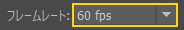

+9の授業 ／ 座学 02
Maya を開いてから、作ったものを提出するまでの決まりごと。
名前の付け方と、データの置き場所。どちらも、チームで作るための土台。
命名規則とは？
制作の現場では、「命名規則（ネーミングルール）」がとても重要。
一見すると、ファイル名やオブジェクト名は自由につけても問題ないが、
実際の制作現場では、多くのスタッフが関わり、膨大なデータを扱うため、
名前の付け方ひとつで作業効率や品質に大きな差が生まれる。
誰が見ても内容が分かるようにするため
例えば、
「character_walk_v01」のような名前であれば、
「どのキャラクターの」「どんな動きの」
「何番目のバージョンか」が一目で分かる。
これにより、
他の人がデータを扱う際にも迷うことがなくなる。
作業の効率化
プロジェクトが進むにつれて
ファイル数は増えていく。
命名規則が統一されていないと、
目的のデータを探すのに時間がかかってしまうが、
ルールがあれば、検索や整理がしやすくなり、
無駄な時間を減らすことができる。
ミスの防止
似たような名前が混在していると、
間違ったデータを使ってしまうリスクが高まる。
特にチーム制作では、
小さなミスが大きなトラブルにつながることもあり、
命名規則はこうしたヒューマンエラーを
減らす役割も果たす。
プロとしての意識を持つため
命名規則を守ることは、
チームで働く上での基本的なマナーの一つ。
学生のうちから
この習慣を身につけておくことで、
実際の現場に入ったときにも
スムーズに対応できるようになる。
hero_run_v02bg_city_day_v01
内容・用途・バージョンが明確
testdata1aaa
中身が分からない／探せない／ミスの原因
プロジェクト設定とは？
シーンに関する全データを、
ひとつの決まったフォルダ階層（箱）に
整理してまとめる仕組み。
制作の上では、3Dモデルのデータ（シーンファイル）だけでなく、
テクスチャ、音声ファイル、レンダリング画像など、複数のファイルを連携させて扱う。
これらをバラバラに保存せず、一元管理するのがプロジェクト設定の役割。
① リンク切れ（テクスチャ剥がれ）を防ぐ
プロジェクト設定すると、ファイルの場所が
「相対パス
（プロジェクトフォルダを基準とした位置）」
で記録される。
これにより、別のPCにデータを移動したり、
他の人とデータを共有しても、
テクスチャなどのリンクが切れるエラーを防げる。
② データの整理整頓
データを保存・読み込みする際、Mayaが自動的に、専用の場所に案内してくれるため、
ファイルが迷子にならない。
scenes フォルダsourceimages フォルダトラブルを防ぐための絶対的な鉄則
Mayaを開いたら、
まず最初に「プロジェクトの設定（Set Project）」を行う
開発の現場でも必ず行う設定なので、癖づけておくこと。

迷ったら、ここを見る。
名前の付け方の大前提フォルダ名・ファイル名
| ルール | 補足 |
|---|---|
| 全角は使用しない | 全角のローマ字、 英数字（ＡＢＣ・１２３）でもアウト。 パスを指定する際に、エラーの原因になる。 ⚠️ フォルダに全角を使用する場合は注意が必要。 例外提出の自分のフォルダ名と Maya シーンは、 名前（フルネーム）を漢字のままでよい |
| 単語と単語の間は 「 _ 」で区切る | スペースではなく、アンダーバーで区切るのが基本。 例： img_enemy_boss_fire.png |
| 大文字と小文字を まちがえない | ローマ字は大文字と小文字の認識をする場合がある。 判断に困るようなら、 すべて小文字にしておくのが無難。 |
| 長い命名にしない | エンジンによっては、パスを含めたファイル名の文字数の上限があるため、 極力命名はシンプルにする習慣をつける。 |
Maya の初期設定
| 項目 | 設定 | 補足 |
|---|---|---|
| プロジェクト | Maya を開いたら、 まず最初に設定する | ファイル ＞ プロジェクトの設定… で、 授業のプロジェクトフォルダを選ぶ |
| fps | アニメーション志望の場合：60 fps自信がない場合： 30 fps プリファレンス ＞ タイム スライダ | 1秒＝60コマ／30コマ。 60fps の方が細かく付けられる分、 付けるコマも多い。 fps の意味座学 01fpsとは？ |
| 再生スピード | 60 fps → 60 fps × 130 fps → 30 fps × 1 | この設定にすることで、再生時の動きが等倍になる。 fps 設定後に、念のため確認しておく |
| バックアップ | 必ずとる | どんな理由であれ、 データの復旧できない状態＝成果は出ていない。 理由座学 01バックアップ |
プレイブラストの設定提出指定した場合のみ
プレイブラスト＝ビューポートの再生を、
そのまま確認用の動画に書き出す機能。
| 項目 | 設定 | 意味 |
|---|---|---|
| フォーマット | qt | QuickTime 形式（.mov）で書き出す |
| エンコーディング | H.264 | 一般的な動画の圧縮方式。軽くて、どの PC でも再生しやすい |
| 精度 | 100 | 画質（100＝いちばん高い） |
| 表示サイズ | ウィンドウから | ビューポートの大きさのまま書き出す |
| スケール | 1.00 | 等倍（縮小しない） |
| ファイルに保存 | ☑ 任意の場所へ保存 | チェックを入れて、保存する場所と名前を自分で決める |
提出するものの名前
| 何を | 名前の形 | 例 |
|---|---|---|
| 日付フォルダ | 年月日の6桁（年の下2桁・月・日） | 260424（2026/04/24） |
| 自分のフォルダ | 学生番号_名前（フルネーム） 名前は漢字のままでよい | 0000CG0000_高橋佐 |
| Maya シーン | 学生番号_名前（フルネーム）.mb名前は漢字のままでよい | 0000CG0000_高橋佐.mb0000SC0000_高橋佐.mb |
| プレイブラスト （指定した時のみ） | 学生番号_名前 （小文字ローマ字フルネーム） .mov | 0000CG0000_tasuku_takahashi.mov0000SC0000_tasuku_takahashi.mov |
授業によっては、命名規則を変更する場合がある。
変更する場合、各授業の資料にて指定をする。
提出場所：Teams ドキュメント ＞ General ＞ 提出
提出の中に、日付フォルダを作成
例：2026/04/24 の場合、フォルダ名は「260424」
その日のフォルダが無い場合は、新規作成してください
日付フォルダの中に、自分のフォルダ（学生番号_名前）を作って入れる
名前の形は、上の「提出するものの名前」
提出ファイルは「回収済※ここに更新するの禁止」フォルダへ移動します
移動したファイルをもとに採点していきます
提出を忘れた場合
「提出忘れ猶予フォルダ」へアップして、報告すること